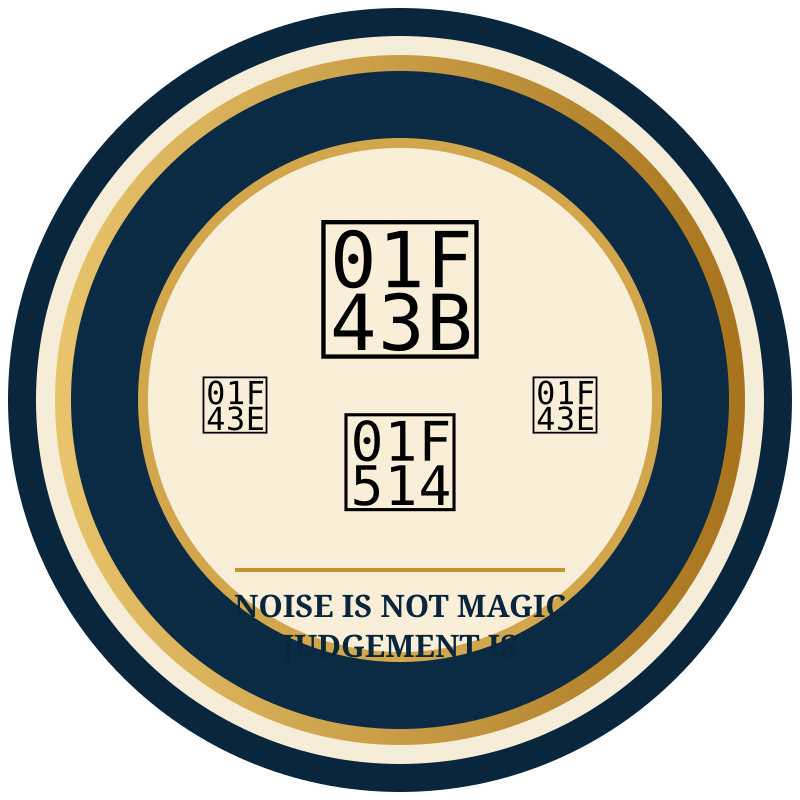

8
Active Ritual Officers
The ceremonial offices currently active in the Bear Bell ritual.

Protected administrative access to the Grand structure, ritual resources and certificate production.
The ceremonial offices currently active in the Bear Bell ritual.
The proposed complete Grand Officer structure for the Grand Assembly.
Create, edit, preview and print Bear Bell certificates or save them as PDF.
Open the ritual book directly from the repository PDF files.
Review the hierarchy, styles, special titles and subordinate Assembly terminology.
Open StructurePrepare certificate number, recipient, Assembly, date, location and Grand signatories.
Create CertificateAccess the working ritual retained with this application.
Read Ritual